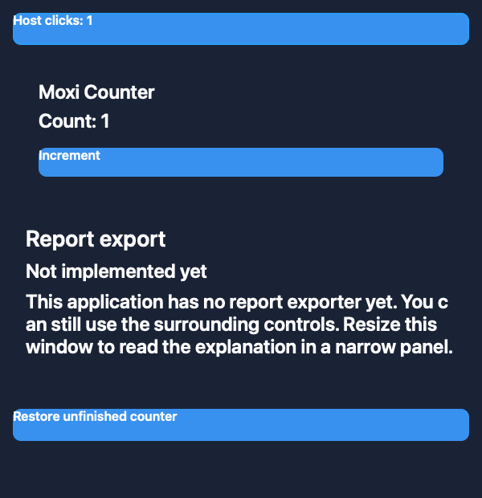

not-implemented · c8d602ae51c333602088c5f30eab5f0f0a164340 · macOS-27.0.1-arm64-arm-64bit-Mach-O · AppKit offscreen bitmap, actual Moxi draw commands · NotImplementedDemo and DemoBrowserState; working-source SHA256 ffdcf4a2fa5d72087f8ab66dfa39ef948ae4148b6ba383a717e96972bbdb620b
Default and explanatory variants Action: Launch the real NotImplementedDemo Expected: Both instances show Not implemented yet; Host clicks is 0
initial · offscreen-render · 600 × 620 pixels
Working surrounding controls Action: Dispatch Enter to the initially focused host button Expected: Host clicks is 1; both informational components are unchanged
interaction · offscreen-render · 600 × 620 pixels

Replace with implemented content Action: Activate replacement and the real counter increment action Expected: Counter is 1 beside the unchanged Report export component